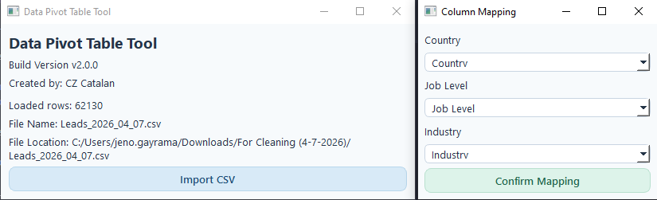
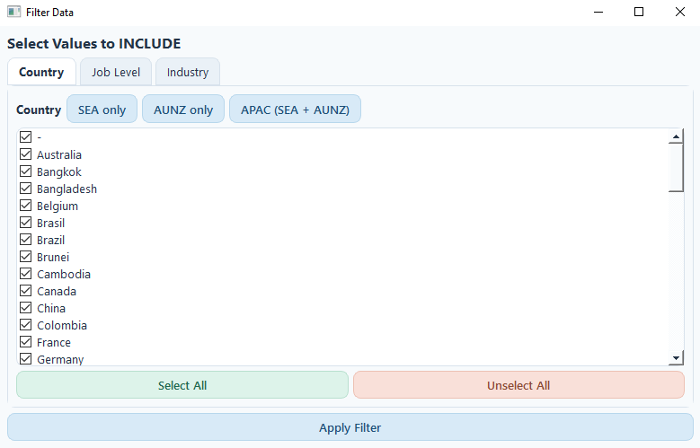

LeadFlow ETL
Automated CRM data transformation tool that converts lead datasets across platforms like Zoho, Vtiger, Lusha, and Pipeleads. Detects pipeline from CSV headers, normalizes data, and outputs clean import-ready files.
Analysis Workflow

Pivot tables are one of the most basic tools in data analysis, and I used them constantly when working with CRM datasets. Grouping by country, breaking down job levels, checking industry distributions, those parts were normal. The real problem was repetition. Every new dataset meant going through the same cleanup, rebuilding the same pivot tables, reapplying filters, and adjusting totals by hand. Even moving quickly, that still took around 20 to 30 minutes per file, and across recurring reports it added up fast.
So instead of trying to get faster at the manual routine, I removed the routine. I built a lightweight desktop tool focused specifically on this workflow. It is not meant to be a general analytics platform. It is designed to take in the kinds of CSV files I already work with and turn them into structured, reusable reports with far less effort.
The workflow starts with importing a CSV, but the first win is reliability. Real-world files often come with encoding issues, messy delimiters, or broken formatting, so the tool tries multiple read strategies instead of failing immediately. That makes the import step much more dependable when working with exports from different systems.
After the file loads, the next bottleneck is column mapping. Rather than manually figuring out which field represents Country, Job Level, or Industry every time, the tool detects likely matches using keyword rules and column patterns. If the mapping is right, I confirm it. If not, I make a quick adjustment once and move on. That removes another repetitive setup step from the process.
Filtering also became much more structured. Instead of building formulas or manually filtering rows over and over, the interface lets me include or exclude values with a few clicks. I also added preset filters for recurring reporting conditions, like region-based selections or decision-maker roles, so I do not have to rebuild the same logic every time a new dataset comes in.
The main output is a pivot-style report generated automatically. Instead of creating multiple pivot tables by hand, the system groups data by the mapped fields and calculates counts in one pass using optimized operations. For my workflow, that means the report is ready almost immediately instead of being assembled step by step in Excel.
One feature that became especially useful is proportional adjustment. Sometimes I need totals to match a specific reporting target. Instead of editing numbers manually, the tool redistributes counts proportionally across categories while preserving their relative distribution. That keeps the final report realistic while still meeting the reporting requirement.
I also built in session saving because recurring reports were part of the original pain point. The tool can save a full setup, including mapping, filters, and adjustments, so the same workflow can be loaded and rerun later. That turns repeated reporting from a rebuild-everything task into a reusable process.
The end result is straightforward but valuable. What used to take 20 to 30 minutes per dataset now takes under 10 to 20 seconds from import to final report. More importantly, the output is consistent. I am no longer rebuilding pivot tables from scratch or worrying about small filtering mistakes. For this specific workflow, the tool removes almost all of the repetitive effort and gives that time back.

